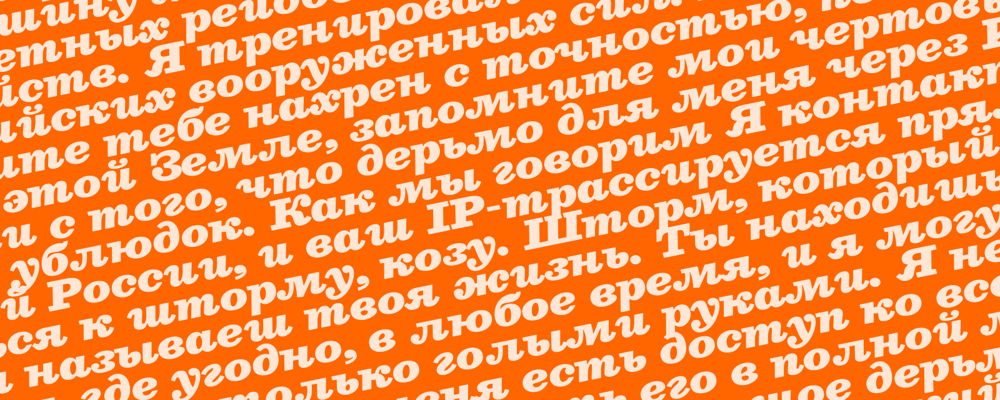
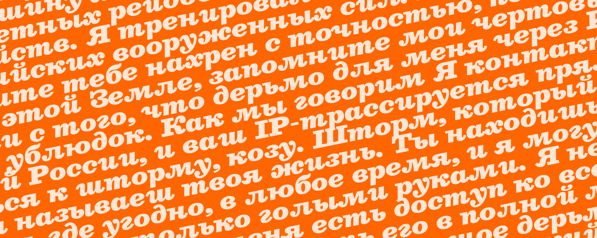

About:
What’s New?
This is version 2.0. Besley* now comes with variable font versions, as well as better language support, kerning, tabular and proportional numbers and other improvements.
Besley* started with a need for a good, versatile, and affordable antique slab serif font. One with italics and a bold that actually was bold. One that would look good on screen and in print. An antique slab serif that didn’t have weird and gimmicky irregularities. A font that is at once welcoming and approachable, while remaining trustworthy and sturdy. Something timeless, that feels of-the-time. A font that is immediately familiar, while providing subtle surprises. A font that just functions, without having to work hard. The font I was looking for was Besley*.
Robert Besley’s Clarendon
Besley* is an antique slab serif, meaning it features larger, sturdier serifs, while retaining a traditional stroke width variance. Besley* is named after Robert Besley, creator of Clarendon. Clarendon is in many ways the defining antique slab serif, and its popularity is easy to understand. Clarendon’s letterforms are big, bold, and loud. Clarendon is recognizable on WANTED posters and US National Park signage.
Limitations of a Century + Old Design
Clarendon is also over 100 years old, and limited in its design and capabilities. Its wide and bold letterforms are compelling at large sizes, but impossible to read easily at text sizes. It was designed for use on metal type, which results in compromise letter forms, like its flattened f
and inelegant kerning. Clarendon was never designed with a complementary italic, and retroactive attempts have all fallen short. Digitization of metal type also compromise design integrity by forcing digitizers to make aesthetic decisions, such as the rounding of corners.
Creating a Modern Classic
The design process of Besley* started with looking at what works with Clarendon and maintaining those assets, while expanding design and functionality. In order to maintain a sturdy and heavy weighting, while adding text-size readability, wide capitals are used alongside appropriately widthed lowercase letters. To make Besley* render well on screens, a larger x-height was chosen. The medium weight of Besley* is bolder than typical fonts of the digital era, to give that cowboy era weight. Italics were built into the design process, so they feel like part of the family, instead of an after-thought.
Features:
Sometimes One Size Does Fit All
Serif fonts often have one pt. size that they work best at, and another that is a compromise. Fonts built for display sizes look thin and hard to read at text sizes, and fonts built for text sizes look sloppy at display sizes. This is not the case with slab serifs. Because the size of the serif is a direct reflection of the width of the stroke, one design can be used for both text and display sizes without compromises.
Beautiful Italics
The challenge of making italics that complement antique slab serifs is nothing new. Making italics that maintain the sense of strength that define slab serifs, while looking beautiful on their own is next to impossible. Making those italics instantly familiar, when no one has seen Clarendon’s nonexistent italics, makes this challenge even greater. Besley* approaches these challenges using a vast approach of techniques. Italics were considered in the design process from the beginning, and references going back to the 1600s were used to find the best version of every letterform. The strength and weight of Besley*’s roman letters are maintained through vertical serif terminals. It’s an original design that is at once recognizable.
How lovely?
Warmth
Old typography has a warmth to it that contemporary letters fail to capture. The human element is present in every step of the creation of movable type. The analog process creates a cozy feeling that is lost in digital recreations. Besley* recaptures this warmth through the rounding of all letter forms. If you look closely, you will not see a single hard edge in the entire Besley* family. Letters are built to look correct to the human first, and geometrically right to the computer never. It's subtle, but creates a general warmth that is added wherever Besley* is present.
R
Fatface
The industrial revolution was an exciting time, and it needed exciting new typefaces to match. It was a period of intense exploration for typography, new and strange ideas were blossoming. It was this period that gave us the antique slab serif, and it wouldn't be complete without the fatface! It's the result of pushing things to their extremes; the fatface is bolder than bold. Many fonts replicate this exciting style, but without regard to a broader font family, or the boldest weight is a thin substitute to the authentic fatface. This is not the case with Besley*! Besley* has the boldest weight available of any antique slab serif with a matching text weight on the market. And it comes with matching italics. So you can use Besley* for the big, attention grabbing titles, and it's text weight for your body paragraphs.
Medium, Bold, Fatface!
Open Type Features
Most people in the world of typography are familiar with ligatures. They replace tricky letter combos, like fi and fl, to make a new, combined glyph. Besley* doesn't just stop at ligatures when it comes to open type features. It used contextual substitutions, in which a single version of a character is swapped for a better version based on context. It’ a sneaky way to make sure you always have the best looking words, not just the best looking letters.
Constantly Improving!
I will be the first to admit that Besley* in its current form isn't the best font it can possibly be; that's why I haven't stopped working on it yet. Unlike traditional fonts that you buy once and are stuck with, Besley* comes with free updates. For life. This includes little changes like kerning fixes and glyph improvements, but also major updates like an expansion of the family. As Besley* grows and improves you will get updates free of charge. Notice something that could use improvement? Issue a bug report on Github and insure that it will be taken care of, and you will receive the updated version.
Easy Web Use
Want to use Besley* on your website? indestructible type* now offers free and easy webfont hosting. Simply copy and paste the following code into the <head> of your website and use font-family: 'Besley'; in your css. The best part is that as I continue to develop and update Besley*, your website will reflect these changes with no extra work from you.
<link rel="stylesheet" href="https://indestructibletype.com/fonts/Besley.css" type="text/css" charset="utf-8" />
Free As in Freedom
Besley* is licensed under the SIL Open Font License meaning not only is it free to use personally and commercially, but it's also free to modify improve and make your own. Read the SIL Open Font License Here.